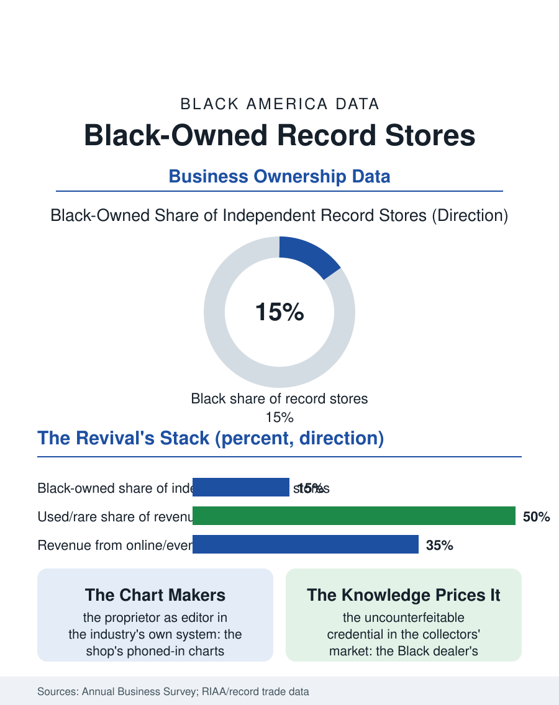

Black Business
The Listening Post: Black-Owned Record Stores
The chart makers and listening posts of the music century, destroyed by the loss leader and rebuilt by the vinyl revival on knowledge the market cannot counterfeit. The record store file.

The Black-owned record store was the music industry's neighborhood embassy: the shop that broke the records the radio would not, charted the community's taste for the industry's own reports, and served as the culture's listening post from the 78 era to the streaming age's vinyl revival. The business census counts the surviving dedicated stores in the dozens, disproportionately Black-owned within the independent remnant. This article reads the record store file.
The Chart Makers
The historical file is the music file's distribution chapter: in the industry's segregated century, the Black record store was the retail terminus of the race records and their successor labels, the place the community's purchases registered, and the store's reports to the trade, the local charts the shopkeepers phoned in, were data the industry programmed by, so that the proprietor was, in the business file's recurring pattern, an editor, the stock and the chart together a canon argument renewed weekly. The store was also the industry's street intelligence: the promoters worked the shops, the posters and the promos flowed through them, the listening booth and the in-store appearance made the shop the artist's neighborhood stage, and the DJ file's founders bought their crates there, the store's import bin and twelve-inch wall being the culture's supply line. The economics were the small retailer's, the margin on the disc and the tape, the accessories and the ticket outlet's commissions, until the industry's format wars and the big box's loss-leader pricing, the chain selling the hit below the independent's cost as a traffic play, destroyed the model's arithmetic a decade before the download finished the argument. The estate and collection brokerage is the trade's quiet high end: the dealer called when a lifetime's shelves must be valued and placed, a service whose fees price the same knowledge at the estate scale, and whose practitioners in the Black catalog are, again, the lifetime residents of the bins, now appraising the collections they helped the collectors build, record by record, across forty years of Saturdays.
The Vinyl Revival's Terms
The revival that rebuilt the independent record store rode the vinyl format's resurrection, and its terms favor the survivor's assets: the used inventory's appreciating value, the curation the algorithm cannot duplicate for the deep catalog, and the event economy of the listening session and the release day. The Black-owned store's position in the revival carries the file's characteristic irony and its opportunity in one: the culture that authored the music the revival collects is served by a remnant of its own retail, the new stores opening in the revival's current wave include celebrated Black-owned rooms in the major metros, and the collectors' market, the original pressings of the soul and jazz catalogs appreciating into the investment class, runs substantially through the dealers whose knowledge prices it, a knowledge tier where the Black dealer's lifetime in the bins is the credential the market cannot counterfeit. The store's modern stack mirrors the bookstore file's: the sidelines of the apparel and the books, the online storefront shipping the rare pressing worldwide, the social channel's daily arrivals video functioning as the new chart, phoned in to the followers each morning as the proprietor's father phoned the trade.
The Listening Post
The record store file closes on the shop's function as the culture's commons: the listening post is where the generations trade, the elder's knowledge pricing the younger's discovery at the counter, in a commerce whose real product is the continuity of the tradition's memory, the store as the archive you can buy from. The industry's current structure, the streaming platform's infinite shelf, has made the physical store's scarcity its meaning, the room where the music is an object with a history and a price and a person who can tell you both. The trade counts the dedicated stores in the revival's hundreds nationally, the Black-owned among them a small and storied tier. The file's last entry is the Saturday crowd at the bins, the teenagers and the elders flipping the same alphabet, the proprietor at the register holding a record for a customer he has known since the customer's father bought the same title in the same shop, the format changed and the transaction identical, which is the definition of an institution and the whole of this file's evidence.
More in Black Business
Black-Owned Businesses: Counts, Receipts, and the Representation Gap
About 161,000 Black-owned employer firms and three million solo ventures: how the Census Bureau counts Black business ownership, where firms concentrate, and the gap between population share and business share.
Black Median Net Worth: The Wealth Gap in Federal Reserve Data
The Federal Reserve puts Black median family net worth at $44,900, against $285,000 for White families — about 16 cents on the dollar. The widest gap in economic data.
Black Buying Power: The $1.8 Trillion Consumer Economy
Black buying power is estimated at about $1.8 trillion — larger than the economy of most nations. What the figure measures, who produces it, and what it buys.
Source: U.S. Census Bureau, Annual Business Survey for recorded media retailers; Recording Industry Association of America and independent retail trade data.